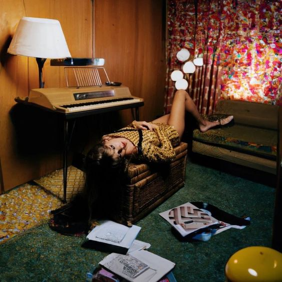
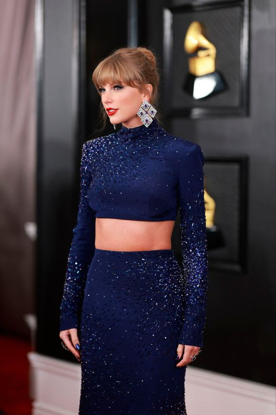
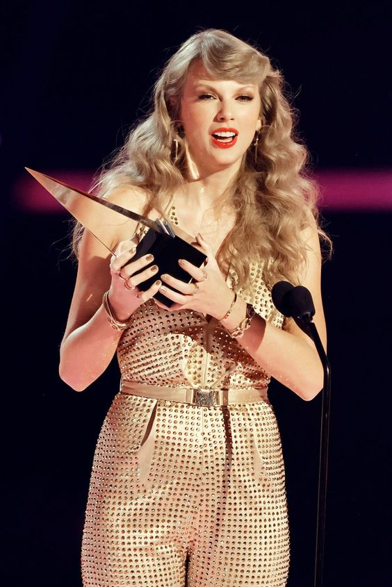
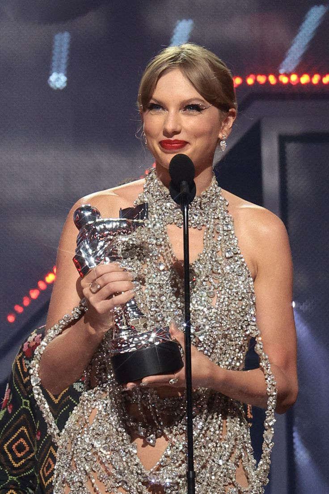

Midnights
- Lavender Haze
- Maroon
- Anti-Hero
- Snow On The Beach
- You're On Your Own, Kid
- Midnight Rain
- Question...?
- Vigilante Shit
- Bejeweled
- Labyrinth
- Karma
- Sweet Nothing
- Mastermind
- The Great War
- Bigger Than the Whole Sky
- Paris
- High Infidelity
- Glitch
- Would've, Could've, Should've
- Dear Reader
- Hits Different
Listen now
Albums
- Taylor Swift
- Fearless
- Speak Now
- Red
- 1989
- Reputation
- Lover
- Folklore
- Evermore
- Midnights
- 
- 2022 MTV Video Music Awards
Taylor Swift took
home the
night’s biggest
prize
–
and announced a new album – during the 2022 MTV Video Music Awards, a chaotic, bleep-heavy show that
nodded to music phenomena past and present, and featured a surprise appearance by Johnny Depp.
Swift, who won best longform video and video of the year for All Too Well (10 Minute Version) for her
2021 re-recorded album Red, was the only artist to double-up on televised awards.
- 
- 2023
Grammy Awards:
Best Music Video for 'All Too Well: The Short Film'
Taylor Swift won the GRAMMY for
Best Music Video at the 2023 GRAMMYs thanks to "All Too Well: The Short Film," becoming the first artist
to win the category with a sole directing credit for their own music video.
Though Swift wasn’t there to accept the award herself, her video co-producer, Saul Germaine, delivered a
short-and-sweet speech thanking Swift as well as the video's team and two stars, Sadie Sink and Dylan
O’Brien.
- 
- 2022
American Music Awards
Taylor Swift may not be having good luck in the touring arena at
the moment, but her awards show success is unbroken. The singer smashed her own record to remain the
most decorated American Music Award winner of all time. Swift took home all six awards she was up for
during the Sunday, Nov. 20 ceremony, including Artist of the Year. Swift now has 40 AMA wins under her
belt, the most of any artist in the show’s history.